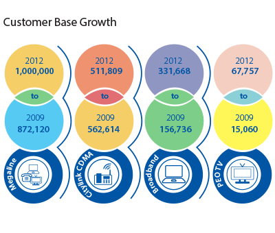
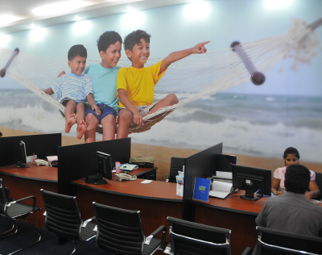

Today, technology and capabilities change and progress as never before – requiring companies such as ours to be visionary, focused and prepared. The speed of such change is no longer in days, weeks or months, it is in the present moment.
... the Company has been shedding legacy platforms which are cumbersome and expensive. This has led to a win- win solution for both the Company and its customers, by bringing about cost savings, consolidation, improved efficiencies, faster service delivery, increased speed and performance, better visibility and monitoring, and new capabilities for future services.
I am pleased to present to you the 2012 Annual Report and Audited Financial statements of your Company. Sri Lanka Telecom takes immense pride in this year's results which reflect the achievement of many goals in the strategic growth trajectory that we mapped for ourselves over the past three years. As the country's premier integrated communications service provider, SLT has been a catalyst of change and transformation in post-war Sri Lanka truly connecting the entire nation as One Country. One Voice.
Telecommunication by definition has expanded today to encompass not only the traditional areas of fixed line telephone service, but also advanced technology-based services including wireless communications, broadband services and advanced IP based services. Over the past decade, we have experienced a growth in mobile devices; exponential increase in data volume also known as "big data"; increased use of social media in the day to day lives of people and the use of cloud computing for data and application access; all of which have transformed the world to the hyperconnected environment we live in today.
The future is now; and globally, the telecommunications industry is experiencing a shift in consumer preferences where the internet and its associated services are accessible instantaneously; where people and businesses communicate with each other in real time and where machines are interconnected and communicate with each other without any direct human intervention. All of this and more are redefining the way telecom companies around the world are doing business.
The year 2012 was a challenging one for Sri Lanka, amidst the slow recovery in the global economy, rising domestic credit and adverse weather conditions throughout the Island which hindered economic performance. After two successive years of impressive growth exceeding 8 per cent, the growth in 2012 is around 6.5 per cent.
Controlled measures by policy makers such as higher policy rates, credit ceiling and lower levels of liquidity leading to higher market interest rates, helped slow the rapid expansion in credit and import demand. Monetary policy decisions taken during the year kept inflation in check at single digits where the December 2012 year-on-year inflation was at 9.2 per cent while the annual average inflation was 7.6 per cent.
The country also experienced a slide in the value of the Rupee when it depreciated from a USD/RS 113.88 in January 2012 to a high of Rs.133.60 by mid-year; it subsequently stabilised at Rs.127.19 as at December 2012.
With tight monetary policy yielding expected stabilisation, the Central Bank reduced policy rates and allowed the credit ceiling to expire at year end in order to provide some stimulus to the economy. The year 2013 is expected to yield better results with a projected real GDP growth of 7.5 per cent and inflation projected to stabilise at mid-single digit levels.
The development goals of the country are progressing on an accelerated path with the country's highway infrastructure being expanded further; the second international airport expected to commence operations in 2013 and the ports around the country being upgraded to meet increased demands. The Central Bank is confident that the country is well on its way to meeting the Per Capita Income target of US $ 4,000 by 2016. The country has also witnessed a rapid development and expansion in the tourism sector, with the number of hotels and thus the number of rooms increasing to meet the country's target of welcoming 2.5 million tourists by 2016.
The International Telecommunications Union (ITU) estimates on global fixed lines are indicative of a worldwide declining trend at 1.16 billion as at the end of 2011 when compared to 1.21 billion in 2009. Wireless service subscriptions worldwide as of November 2011 were approximately 5.9 billion and expected to grow rapidly, as low cost service providers are offering low enough prices that are affordable for consumers in emerging markets. Broadband penetration globally is on the low end which is estimated by ABI Research, a US based firm, to be 618.7 million at the end of 2012 up 7.3% from the previous year.
The Global information Technology Report (GITR) 2012, a collaborative project between the World Economic Forum and INSEAD indicates that according to the research of the Gartner Group, worldwide sales of mobile devices reached 440.5 million units in the third quarter of 2011, while smartphone sales for the same period increased by 42 percent from the previous year. The GITR also reports that research by Ericsson estimates over 50 billion connected devices to be available in the world by 2020.
Increases in connected devices translate into escalating growth of data and data traffic. According to the International Data Corporation (IDC), one zettabyte of data (1 billion trrabytes) was transmitted worldwide for the first time in 2010. Further growth is ensured with digital capability expected to double every two years.
Networked Readiness Index (NRI) which measures the degree to which economies leverage ICT for enhanced competitiveness, indicates that Nordic countries are the most successful where ICT is fully integrated in their strategies to boost innovation. As evident with the surveys made, ICT is present in all areas of society, such as education and healthcare. The Nordic countries: Sweden, Finland, Denmark, and Norway along with other advanced economies dominate the Top 10. Singapore leads the Group of the Asian Economies with an overall 2nd place behind Sweden; ahead of 11th placed Taiwan – Republic of China, 12th placed Republic of Korea and 13th placed Hong Kong SAR. Our neighbour India, better known for ICT advancement in the country with many global BPO/KPO giants making it their home, have been placed 69th, two places ahead of Sri Lanka which is at 71st place.
ITU having understood the importance of accessibility to broadband services and the lack thereof in the developing countries, has introduced a policy document outlining four significant targets to be achieved by 2015: 1) Making broadband policy universal where all countries should have a national broadband plan or strategy or include broadband in their universal access/service (UAS) definitions, 2) Through adequate regulation and market forces, entry level broadband services should be made affordable in developing countries, 3) Connecting homes to broadband, where 40 per cent of households in developing countries should have Internet access, 4) Internet user penetration should reach 60 per cent worldwide, 50 per cent in developing countries and 15 per cent in Least Developed Countries (LDCs).
The development policy framework of the government identifies telecommunications as a necessary tool in Sri Lanka's transformation to be one of the strategically important economic hubs in the world. Though mobile penetration in Sri Lanka as at end of the third quarter of 2012 stood at 95%, the internet user penetration is a low 13% which the Government of Sri Lanka and SLT have recognised as a challenge that needs to be addressed in order to boost the growth of the country, along with connecting the citizens to better prosperity.
The network modernisation projects undertaken by SLT and Mobitel will enhance access to telecommunication services, especially broadband and internet throughout the Island. The geographic coverage expanding to the North and the East enables businesses and individuals to broaden their knowledge, advance their skill sets and enhance their societal wellbeing while contributing to the economic growth of the country. ICT access, especially in the East, will support the tourism development related projects that are in line with the country's development goals. SLT-Mobitel's active partnership in the Deyata Kirula –the national development exhibition - takes technology to the rural areas, enabling people in the remote areas of the country to gain knowledge and insights in to the latest technologies available and the use of such technology for the advancement of themselves and their businesses to the next level.
The enterprise customers, rural and urban, are already being offered technological solutions in terms of voice, data hosting, networking and managed services. Cloud computing, the latest buzz word in the IT world will be delivered to the enterprise customer's door step by SLT with additional benefits of significant cost savings, ease of implementation and enhanced remote access to information.
Your Company and Group achieved formidable growth in 2012. The results achieved as at 31st December 2012 when normalised for exchange losses on translation were significant.
However, the Rupee depreciation early in the year had an adverse effect on the financials of the Group on translation. When taking the exchange loss on translation into consideration.
Growth in the Group's financials is a result of the initiatives and strategies undertaken over the past few years. Revenue growth is driven by Mobile voice, Broadband, PEO TV, Enterprise Data and Wholesale services.
The SLT Group has invested substantially in infrastructure expansion projects. In 2012 alone the Group invested Rs.17 billion and in the last 3 years the Group invested a cumulative total of Rs.42 billion. The network modernisation and expansion projects undertaken by SLT and Mobitel are at the forefront of transforming the telecommunications industry in the country.
SLT's Next Generation Network (NGN) implementation includes converging all access networks into a singular platform. Replacing historic legacy platforms will result in cost savings, improved efficiencies, faster service delivery, increased speed and performance and new capabilities for all future services. SLT, by demonstrating that its National Backbone Network (NBN) could meet the requirements of the TRCSL's (Telecommunication Regulatory Commission of Sri Lanka) National Backbone Network requirements, finalised discussions with authorities to grant a 10 year license to provide backbone services to the nation.
The "i-Sri Lanka" network modernisation project of SLT is revolutionising broadband access across the country. Currently 14,656km of fibre optics based networks have been built and on average 3,500km per year are targeted to be laid in the coming years, enabling customers to enjoy consistent, uninterrupted high speed internet services. The target of i-Sri Lanka is to achieve broadband speeds of up to 20 Mega Bits Per Second (Mbps) for more than 90% of the fixed line customers by end of 2013, enabling a digitised Sri lanka to have affordable and competitive prices bridging the digital divide.
SLT has capitalised on the Group synergies as evidenced with the growth of our customer base. Megaline Customers have grown by 6% to reach the current 1 million base; Broadband customers have grown by 21% to 330,000; Mobile customers have grown by 14% to exceed 4.5 million and PEO TV customers by 48% to 68,000. The Network modernisation and expansion projects will bring about further growth of our customer base enabling most of Sri Lanka to enjoy the fruits of SLT Group synergies.
Completion of stage 6 of Mobitel's expansion plan increased the total number of 2G and 3G base stations by over a thousand sites which are all connected through SLT's fibre network ensuring high reliability, high quality and high capacity bandwidth connectivity. In December 2012, Mobitel achieved a first in Sri Lanka and in South Asia by being the first wireless service provider to be 4G LTE ready. Long Term Evolution (LTE) is the 4th generation (4G) mobile technology which is the leading technology for mobile broadband services globally.
An increase in SLT's customer base for double play (Telephone and Broadband or PEO TV) and triple play (Telephone, Broadband and PEO TV) was enabled with the expansion of the i-Sri Lanka network by reaching the far corners of Sri Lanka and bringing with it speed and clarity.
Internet protocol enabled PEO TV services which offer customers a reliable platform to enjoy the best of local and international news and entertainment, revolutionised traditional television viewing with another first in Sri Lanka in the form of TV Banking introduced during the year.
SLT Publications, whose proud product RAINBOW PAGES is the "national" telephone directory that is used by the entire nation, made many improvements to upscale its products.
SLT manpower services, entrusted with meeting the manpower requirements of the entire Group, specifically for recruiting, training, assessing, selecting, outsourcing and providing consultation etc and SLT Services, the backbone for the Group's data networking services which provides project management and consultancy services to the subsidiaries, have capitalised on synergies and brought in efficiencies to the Group's operations.
have capitalised on synergies and brought in efficiencies to the Group's operations.
During the year, SLT Group successfully transformed the internal processes and practices that will bring in efficiencies and increased productivity throughout the Group. Many Human Resource practices were enhanced while introducing much needed systems such as a Customer Relationship Management (CRM) system and a new Revenue Assurance System (RAS), along with best practices introduced throughout the Group. The Group also ensured that relevant staff were given training in their areas of expertise and on customer service, to enable us to serve the customer better with stronger commitment to service delivery and assurance.
In an effort to be more transparent and to ensure that good governance practices are strengthened within the organisation, SLT introduced enhanced governance practices. SLT also further strengthened the Risk Management practices and process in order to ensure that our stakeholders' investment in the Company is protected.
The broader national ICT vision of the Government is complemented by the Group's practices of corporate citizenship. SLT and subsidiaries support education initiatives with universities, schools, vocational training institutes, National Online Distance Education Service and Rural ICT centres while also partnering with many professional bodies to expand their reach to members and society as a whole. Group subsidiaries also partner with and support the Government's efforts towards child protection and dengue eradication.
The Group has also taken measures to save the environment through substantial progress in the area of energy management, by identifying and implementing environmentally safe and sustainable practices within the organisation. The deployment of Next Generation technology discussed above and elsewhere in the report, allows for the minimum usage of energy thus reducing the resultant environmental impacts and allowing for better utilisation of existing resources. The Group joined hands with the Central Environment Authority during the year to carry out an island- wide electronic waste recycling programme, in addition to battery recycling and other "environmentally friendly" initiatives that are practiced throughout the organisation.
The awards and accolades won by our Group this year are a testimony to the calibre of staff and their work ethics. The dedication with which they perform their duties is why the SLT brand is holding its own against the competition.
Amongst our other significant achievements for the year are being placed10th in the Business Today 'Top Twenty Five' Awards 2010-2011; being ranked No. 6 in Sri Lanka LMD 100 ranking 2012; winning the overall GOLD award of National Business Excellence Award 2012 - Organised by The National Chamber of Commerce of Sri Lanka as well as three more GOLDs and one SILVER category award. SLT received due recognition for our work as an exemplary corporate citizen. We were recognised as one of the Ten Best Corporate Citizens in Sri Lanka within the CSR & Sustainable Business categories and also won the Category award of best performance for Economic Contribution at the Best Corporate Citizens Award 2012, conducted by the Ceylon Chamber of Commerce. We were adjudged the winner in 'Brand Leadership-Overall Category' at the 'Global Awards for Brand Excellence'.
Winning the Gold award for the 'Telecommunication Sector' category at the Annual Report Awards 2011 organised by the Institute of Chartered Accountants of Sri Lanka is indicative of our commitment to give the best returns to our stakeholders while being transparent in our disclosures.
SLT was also recognised at the HRM Awards 2012 conducted by the Association of Human Resource Professionals in partnership with AON Hewitt India. SLT won a Silver Award for the implementation of Best HR Practices and Techniques, giving us confidence that our HR practices are amongst the best, facilitating the retention of the best talent. Mobitel has been recognised in 2012 by the highest institute in the profession of Engineering, by winning the gold award for 'Best Demonstration' and a silver award for 'Best Display of Engineering Services' for the official stalls at the Techno 2012 Exhibition for the third consecutive year. Mobitel also won the coveted 'Excellence in Engineering' award, under the category 'Infrastructure – Service Sector: Large' at the Annual Engineering Excellence Awards 2012.
Hyperconnectivity as mentioned earlier is transforming the world of ICT and societies in general. It is introducing new opportunities to increase the productivity and well-being of society by redefining how business is conducted, generating new products and services, and improving the manner in which public services are delivered. This has enabled us to live in a world where the distinction between rural and urban is losing its meaning. It has broken down boundaries of both time and space, bringing people and things together from all parts of the world at any given time. Hyperconnectivity has also given rise to a globalised "168" world, where the work day continues around the clock, 24 x 7, or 168 man hours per week. Equipping mankind with the knowledge and tools necessary to compete and be more productive in this fast paced world is upon us now.
We are dedicated to connecting every home in the country and bringing people online and connecting consumers across all continents enabling societies to "meet" and transact in a seemingly "borderless" world. Sri Lanka is ready to join the fast digitising world! The future is upon us and Sri Lanka Telecom is equipped to support the growth.
The achievements for 2012 were a true team effort. I must thank my Board of Directors for their valuable contribution and active participation in supporting and guiding the strategic vision of SLT. Together with the CEO of SLT and CEOs of each of the subsidiaries and the respective senior management teams and all the staff we set foot on a journey of transformation four years ago and together have brought SLT to meet the future now.
My sincere appreciation to the CEOs and the respective senior management teams and all the staff for their dedication and hard work in implementing the strategic objectives through the Group. To our valued stakeholders, thank you for your confidence, support and loyalty. The Future is Now. Our promise is to deliver faster and better services to you.
Dear Stakeholder,
It is with an immense sense of responsibility and pride that I assume the role of Group CEO of your Company. I consider it an honour to serve my country as the first local CEO of SLT since its privatisation in 1997.
While my Chairman and my predecessor have reviewed the 2012 financial year in great detail, I wish to take this opportunity to assure you, our stakeholders, of my commitment to add value in every possible way to consolidate SLT's leadership position and to propagate the 'One Country. One Voice.' vision.
The Company's vision is clearly aligned to the government's ICT policy, as set forth in the 'Mahinda Chinthana' and we are fully cognizant of our role as a catalyst in building the ICT capacity and capability of the country.
Following three decades of strife, Sri Lanka's people and economy today reap the benefits of freedom. Sri Lanka has an unprecedented economic growth potential. The Government's vision to reach USD 4,000 per capita income by 2016 and a USD100 billion GDP economy is one that is shared by SLT as well. We are well focused towards this goal, and will play a great role in contributing towards the achievement of the projected national growth momentum.
During its 150 year history, SLT has become inexorably enmeshed in the lives of Sri Lankans – these relationships are a heritage that we must leverage upon as we move forward. Over the next few months, our stakeholders will see us unroll path-breaking ICT innovations that will further enrich their lives and businesses – a just reward for the trust and loyalty they have placed in us.
Sri Lanka's ICT industry has been one of the most dynamic and competitive industries over the last few years. Sri Lanka is now positioned on a platform of fast track development and ICT has emerged as a key driver of development and economic growth. With ambitious investment plans to take the ICT industry to the next level, your Company will strengthen its position as a key contributor in making Sri Lanka the ICT hub it aspires to be.
The SLT team will be driven a by a mission to strengthen our position in terms of size, making us the most sought-after integrated telecommunications provider in Sri Lanka amongst our key stakeholders. We will re-energise and align ourselves, introducing best-in-class corporate policies, processes and procedures propelling us to greater heights, further demonstrating our passion to be One Country. One Voice. One Team.
People are my passion. My people-centricity and outcome- oriented approach aims for a 360° transformation of the company, which will put us in a prime spot to strengthen our position in the industry, readying us ably to meet any challenge in the ever dynamic ICT environment.
I am excited at the opportunity to drive this world-class institution into a new era of innovation and triumph, and trust that the support of our stakeholders – from our customers and employees to our business partners and regulators - will continue unabated.
Dear Shareholder,
Today, technology and capabilities change and progress as never before – requiring companies such as ours to be visionary, focused and prepared. The speed of such change is no longer in days, weeks or months, it is in the present moment. At Sri Lanka Telecom, we believe that our success depends on how well we deliver the future of telecommunication solutions, right now.
The transformation journey we embarked on four years ago was a formidable challenge to propel ourselves into a future ready, market driven, customer centric business organisation. We have worked tirelessly towards the optimisation of services and operations, modernisation of our network and leveraging synergies within the Group, through our medium to long term strategies and investments. The results we present to you in this report are a reflection of these best in class business practices and evidence of the well governed and transparent organisation that we have become.
In a highly competitive telecommunication market, across voice, broadband and TV in both the fixed and wireless segments, we have focused on the four goals of Services, Operations, Network and a Synergetic approach as key strategies that ensure the Group remains competitive.
2012 saw the fruition of many of the major initiatives undertaken during the Company's four year transformation journey: among the highlights were the Government of Sri Lanka licensing SLT to operate the Sri Lanka National Backbone Network (NBN); the expansion and acceleration of
the i-Sri Lanka project and the Next Generation Network (NGN) architecture, the introduction of a new Customer Relationship Management (CRM) system and a new Revenue Assurance System (RAS). The Company also made enhancements to internal operations, risk and governance structures, while embedding the need for improved service delivery and fulfillment as key tasks in 2012.
The sheer breadth of the work undertaken and the resultant achievements in 2012 have delivered one of the most meaningful and impactful years in the Company's journey, capped at the end of the year with numerous accolades.
A strong focus on delivering our strategic plan efficiently and effectively has made the year under review one of considerable positive achievement for your Company. At the Group level this year's performance was unfortunately impacted by a volatile and depreciating exchange rate resulting in exchange losses on translation. The key indicators for the year, when normalised to exclude exchange losses on translation, included a 10% growth in revenue from Rs.51.64 billion to Rs.56.77 billion with profit before tax growing to 12% from Rs.6.41 billion to Rs.7.18 billion and profit for the year recorded at Rs.5.25 billion, a 10% increase over the Rs.4.75 billion recorded last year. At the Company level the impact of exchange loss is minimal and saw Company Revenue increasing 8% from Rs.32.29 billion to Rs.34.72 billion; Company PBT increased 4% from Rs.4.49 billion to Rs.4.68 billion, and Company profit for the year increased 1 % from Rs.3.34 billion to Rs.3.36 billion.
With the impact of macroeconomic policy decisions taken early in the year and the global economy yet to experience an upward trend, the GDP growth of the country saw a downward revision to 6.5% as at the end of 2012. The year- on-year inflation in December 2012 was at 9.2%. Amidst these macroeconomic conditions, SLT achieved considerable revenue growth during the year.
The Company has been making steady progress with quarter over quarter revenue growth of 1.3 % and 2.6% for third and fourth quarters respectively when compared to the immediate preceding quarter. When compared to the Asia Pacific telecom industry, the revenue growth for the Company for the year is above the industry annualised average of 5%-7%. Furthermore, at Company level, the exposure to foreign exchange losses has been minimised by measures taken to mitigate the risk and balance exposure, thereby neutralising the P&L impact of exchange variation.
Consistent with our long term strategy and the annual plan, revenue growth for the year was driven by non-traditional streams including fixed broadband, PEO TV, wholesale, enterprise and international services. Contrary to the global trend of declining traditional fixed line subscribers, SLT has demonstrated success in stabilising the revenue decline of Megaline voice by creating demand for high speed broadband and PEO TV among our fixed line customers through Megaline double play and triple play offers which attracted a significant number of new customers. We closed the year within a matter of days of achieving the milestone of 1 million Megaline customers, which now brings our Megaline capability and access to 4.5 million Sri Lankans across one million households.
The ongoing focus on cost management efforts was further strengthened during the year, including the launch of the new Revenue Assurance Syster (RAS) to help identify and eliminate additional areas of revenue leakage.
SLT has been aggressive in its reduction of bad debt and has seen the debt holding ratio reduced from a peak of 69 days in 2011 to 62 days as at December 2012 for domestic services. Similarly, the Company has reduced the debt holding ratio for international services from a peak of 5 months to 3 months at the end of the current financial year.
The Company has been fortunate that the forex impacts on its business have been comparatively minimised, due to the natural hedging that it enjoys from transacting its international telephony business in US dollars. Though spiraling energy and fuel prices have had a serious impact on overheads, transportation and utility costs, SLT has implemented strategic energy management initiatives to identify opportunities to reduce energy consumption. The NGN migration alone is expected to contribute Rs.15 million in energy savings while we expect a group-wide saving of 1% of energy costs through heightened awareness, energy saving equipment and practices.
A primary challenge that we are faced with going forward is rising staff-related costs, which, combined with an aging staff profile is driving our focus on revised HR strategies and updated policies to increase productivity and mitigate business continuity issues.
In 2012, the Company invested over Rs.13.9 billion towards network modernisation and expansion projects designed to enhance the customer reach and customer experience.
Over the 2010-2012 period, our capital investment was more than double the preceding 10 year average, demonstrating our commitment to investing for the future and alignment of our vision with the Government ICT objectives.
The investments made in the i-Sri Lanka project linked with NGN and optical fibre network expansion bode well for the future of SLT and establish a foundation for advanced services to all customer segments. The i-Sri Lanka project which commenced in the latter part of the year 2010, enhances and upgrades the existing fixed access network by expanding the fibre closer to the customers through FTTN (Fibre to the Node) deployment. By reducing the existing copper cable length, the reliability, quality and broadband data speeds are significantly improved and SLT's quality and range of services places us on par with developed countries. The i-Sri Lanka project targets broadband data speeds of up to 20Mbps, for 90% of SLT's fixed customers by end of 2013.
During the year, 3,500 km of Optical Fibre were deployed around the country resulting in a total length of 14,656 km as at 31st December 2012. The deployments during the year catered to the i-Sri Lanka project as well as Mobitel's stage 6 expansion. A further 3,400 km are planned for 2013 to support the i-Sri Lanka project, Stage 7 of Mobitel expansion and the expansion of Megaline double and triple play services, while also facilitating the high capacity backbone requirements of other operators.
Enhanced product offerings have paved the way for considerable growth in the subscriber base. Total fixed wire line connections have increased by 14% since 2009 to now reach 1million, and while the growth in subscribers remains modest, it opposes global trends and demonstrates the strong demand for our double play (Telephone and Broadband/PEO TV) and triple play (Telephone, Broadband and PEO TV) services delivered over a common Megaline connection - 'One line offering three unique experiences'.
Furthermore, we have designed our broadband packages to suit the many lifestyles and needs of our customers. New packages with higher data volumes and higher speeds allow users to select download speeds ranging from 2Mbps up to 16Mbps. Volume based packages were introduced to improve users' internet experience with data volumes starting from 2GB and ranging up to 300GB per month. The Company is adept at gauging and adopting telecom developments around the world and has been quick to respond to the social media revolution and the growing demand created by Smartphones and SmartTabs for WiFi access. We have promoted wireless internet access through the introduction of attractive prices and offers for Wi-Fi enabled office/home gateways, bringing increased flexibility and an incentive for customers to adopt our flagship 'SLT Broadband' product.
Citylink CDMA continues to provide connectivity to Sri Lankans in the remaining pockets not accessed by SLT wireline "Megaline" services. However the extension of our network through i-Sri Lanka has provided an opportunity to many CDMA Citylink customers to migrate to Megaline connections. Our special Megaline migration offers targeting our loyal and long standing CDMA customers have proven very popular.
During the year, SLT launched a suite of "Intelligent Solutions" targeting the enterprise customer segment. The portfolio of products emphasises our extensive product architecture and capability covering voice, data hosting, networking and managed services. IP based services along with virtual hosting and cloud computing are some of the key products targeted at the enterprise segment.
The Enterprise IPVPN product has grown well in 2012; SLT's enterprise solutions now power all sectors of the country's economy.
Following the creation of a specific group in 2011 to focus on the SME segment, we have seen success from our focus on this important customer group almost doubling the customer base.
In a bid to strengthen engagement with key enterprise, corporate and SME customers, customer forums were introduced during the year to strengthen their relationships with our senior management. Eleven forums were held in 2012 covering all provinces and two were held exclusively for enterprise customers.
Our transformation programme that we initiated 4 years ago covered all aspects of our organisation – it involved the restructuring, reorganising and refocusing of operations around new technologies and platforms on the one hand, while optimising staff and resources to deliver greater efficiencies and ensure improved service delivery and assurance on the other.
In the year under review, the Company focused heavily on streamlining the areas of service delivery and fulfillment, service assurance, repair and restoration. Among the major initiatives undertaken was the introduction of a new Customer Relationship Management (CRM) system which provides access to a 3600 customer profile. The CRM brings in greater customer intimacy by improving our understanding of customer needs, enhancing customer interaction and strengthening our ability to make targeted offers, and streamlining our customer fulfillment process.
The Revenue Assurance System is yet another key implementation this year as part of the operational transformation. The system, which is integrated with the billing and all network platforms and customer touch points, brings efficiencies in identifying subscriber usage patterns and leakages. It has the capability of concurrent monitoring of multiple business processes while providing real time alerts and reporting capabilities to identify discrepancies between systems.
Organisational structure reforms this year were predominantly centred on the training needs of our Human Capital in order to provide optimum customer service in a fast changing competitive and technological environment. All customer touch points within the organisation were provided with extensive training on products and services to improve service fulfillment and service assurance. Migrating to NGN architecture, FTTH and the many network changes demanded the retraining of our field staff and restructure of field teams which have now been completed. Sales teams that were previously specialised in providing voice only services now have the tools and knowledge to facilitate customers converting to double and triple play services. Switching and transmission engineers were merged as network engineers to support overall service quality.
extensive training on products and services to improve service fulfillment and service assurance. Migrating to NGN architecture, FTTH and the many network changes demanded the retraining of our field staff and restructure of field teams which have now been completed. Sales teams that were previously specialised in providing voice only services now have the tools and knowledge to facilitate customers converting to double and triple play services. Switching and transmission engineers were merged as network engineers to support overall service quality.
An SLT Network Operating Centre (SLTNOC) was opened this year to oversee and manage our islandwide network of all platforms and technologies. In essence, the INOC enabled the consolidation of services and functions that were decentralised and fragmented, now bringing increased focus on speedy service restoration.
The Company also took the opportunity this year to focus on much needed updates to many historic policies and processes governing human resources. Among the areas targeted for improvement were the streamlining of reporting structures and linking of staff objectives to the annual business and operational plans to facilitate better performance management.
Training and development received renewed focus this year to gear our Human Resources to respond to the demands of the new operational structure and to instill in them, the importance of excellence in service delivery and assurance. The retirement of SLT's old legacy network equipment necessitates the retraining and redeployment of a large number of employees to new areas.
Along with the plethora of unique services being offered by SLT, its success lies in the heavy investment in network modernisation and capacity improvement. The SLT Next Generation Network, involving the convergence of all access networks on to a singular platform, is currently in Phase 4 of implementation. By end 2012, 39% of the total customer base - nearly 400,000 customers – had already migrated to the modern NGN platform enabling a bundle of IP based value added services. Plans are on track to achieve the migration of 66% of the total customer base – surpassing 700,000 customers - to the NGN platform by the end of 2013.
The heavy investment in network modernisation and capacity improvement has meant that the Company has been shedding legacy platforms which are cumbersome and expensive. This has led to a win-win solution for both the Company and its customers, by bringing about cost savings, consolidation, improved efficiencies, faster service delivery, increased speed and performance, better visibility and monitoring, and new capabilities for future services.
The explosive growth and demand for high speed Broadband bodes well for SLT's investments in infrastructure and its marketing plans have been integrated to ensure that NGN benefits can be delivered islandwide.
SLT is committed to ensuring that homes and businesses receive ultra high speed internet and high quality PEO TV services while supporting and enhancing business capabilities via superior broadband services. The i-Sri Lanka project facilitates improved reliability and quality, and higher broadband speeds by reducing the copper cable length. This will ensure that SLT's quality and range of services remain on par with developed countries.
To achieve the pre-set targets, the SLT team installed more than 1,300 MSANs (fibre to copper nodes) around the country during the year across our Megaline footprint, enabling capacity for more than 350,000 customers. More than 400 additional MSANs are slated to be installed during the first half of 2013, targeting a further 250,000 customers.
SLT has firmly embedded the principles of sustainability within its business strategy and operations. The Company has always been actively involved in connecting communities using modern technology – the customised communication solutions we provide empower people, businesses and the government.
The Company's vision of good corporate citizenship supports the broader national ICT vision, as set forth in the Mahinda Chinthana vision of the Government. By facilitating access to broadband services in Sri Lanka, SLT aims to boost national GDP while supporting online education initiatives such as connecting universities (LEARN), connecting schools (SchoolNet) and vocational training institutes, National Online Distance Education Service (NODES) and rural ICT centres (Nenasala). SLT also partners with many professional bodies in order to uplift the standards of the community.
broadband services in Sri Lanka, SLT aims to boost national GDP while supporting online education initiatives such as connecting universities (LEARN), connecting schools (SchoolNet) and vocational training institutes, National Online Distance Education Service (NODES) and rural ICT centres (Nenasala). SLT also partners with many professional bodies in order to uplift the standards of the community.
The Company sustains its position as one of the largest investors towards the economic development of the country, with a cumulative investment of Rs.28.8 billion over the past 03 years.
SLT's economic impact is significant – as the leading communication solutions provider and the national backbone network operator, our services facilitate all the operators in the country and make a robust contribution towards the booming mobile and broadband spaces. We are proud that we have provided a sophisticated communication system - on par with some of the best in the world - to Sri Lanka, thereby boosting investor confidence.
This year SLT made substantial progress in the area of energy management, through the appointment of an Energy Committee to study the current energy usage and overlook environmentally safe and sustainable practices within the organisation. The deployment of Next Generation technology allows for the minimisation of our environmental impacts and better utilisation of existing resources. As another component of "saving our planet" initiatives, the Company partnered with the Central Environment Authority to carry out an island-wide electronic waste recycling programme.
The Group's sustainability practices and corporate social responsibility initiatives are discussed in detail in the Sustainability Section of this report (from page 82 to 111), which is our first step in the adoption of the internationally accepted GRI framework for sustainability reporting parameters. This year's report is a B level (self-declared) report.
As a facilitator of commerce, SLT remains the single most influential provider of communication solutions across the entire spectrum of business – from large multinationals and corporates, to small and medium enterprises and micro business, as well as our own competitors. It is a position that we hold with a great sense of responsibility – and our governance structures and risk management framework, as detailed in the respective sections of the report, are geared to ensure that SLT is well-managed, risk-ready and accountable.
Modern Teleshops to serve customers better
A Strategic Governance Board (SGB) is in place to allow the Company to make pro-active and well-balanced Governance decisions based on compelling justification for investments and adequate reporting controls. The SGB is a cross functional governance secretariat with Chief Officer level representation from each functional area. The SGB is accountable to the Board of Directors and has six cross functional governance Boards operating within it, namely Transformation and Change Governance Board; Product Governance Board; IT Governance Board; Network Governance Board; Facilities and Services Governance Board, and Enterprise Solutions Governance Board. The Governance Boards evaluate new projects through a Stage-Gate process and have primary responsibility to ensure that new projects are aligned to business plans; have no overlaps or conflicts with other projects; represent business value; are a good use of Company resources; use proper project management tools and manage risks at level acceptable to the Company.
SLT was successful this year in renewing its operating license for a period of ten years. By demonstrating that its Next Generation Network architecture has the capability of meeting National Backbone Network (NBN) requirements, SLT has been chosen by the Government of Sri Lanka as the licensee to operate the NBN. The license conditions related to NBN operations have been included into the renewed SLT operating license along with other license obligations imposed on SLT. The appointment as NBN operator eliminates any unnecessary duplication of investment and allows for greater utilisation of the SLT backbone network, benefitting the industry and the nation as a whole to achieve better broadband penetration.
been chosen by the Government of Sri Lanka as the licensee to operate the NBN. The license conditions related to NBN operations have been included into the renewed SLT operating license along with other license obligations imposed on SLT. The appointment as NBN operator eliminates any unnecessary duplication of investment and allows for greater utilisation of the SLT backbone network, benefitting the industry and the nation as a whole to achieve better broadband penetration.
The National Backbone Network is a highspeed backbone network that can facilitate the traffic of all operators while enabling the achievement of the Government's objective of high speed broadband for all Sri Lankans.
The NBN contains an ultra modern fibre network covering 100% of the 168 electorates around the country and is formed on the basis of a layered structure containing a transport layer and a control layer, where the transport layer is capable of carrying the bandwidth of other operators. The NBN obligations entail covering the 239 divisional secretariats of the country with at least one access point in each within the next five years to allow other operators to access the NBN for backhauling of their traffic. Given its wholesale characteristics, the NBN conforms to the Company's wholesale business strategy and should bode well for the future of the wholesale segment.
SLT is well geared to meet the Sri Lankan Government's recently announced plans to introduce strict rules related to quality of service. SLT is already a step ahead with our enhanced ISP Core providing regular reporting and visibility to monitor and self assess performance. SLT has voluntarily granted access rights to the Regulator to test the performance of SLT services.
Following Sri Lanka's Accounting Standards Board aligning local financial reporting standards with the International Financial Reporting Standards (IFRSs) in the form of SLFRS, SLT is reporting the 2012 financial statements contained in this report as per the IFRS requirements.
Under the value proposition 'One Country. One Voice', SLT positioned itself as the largest integrated telecommunications service provider in the country. The new corporate identity is national minded in focus and embodies the path that Sri Lanka is stepping into. As the national industry leader, this emphasises the role that we play in uniting the country under one vision while infusing the concept of connectivity as being a great unifier of the nation.
The 'One Country. One Voice' brand promise was fully implemented during the year with all visible points of SLT presence aligned with the new branding. An integrated programme ensured consistent branding across all media, including previously unexplored areas such as roadside cabinets. As a best practice, a Company-wide brand manual was introduced while a Brand Council was instituted with a mandate to build and protect the SLT Brand. The investment in promotion and advertising to reinforce the SLT brand has already begun to pay dividends with integrated and consistent branding across all aspects of SLT products and services.
'One Country. One Voice' heralds the introduction of unique and innovative products and services across voice, data and video, inspired by the vision of connecting all Sri Lankans seamlessly through world class telecommunication solutions. With Sri Lanka well on its way to becoming a knowledge economy, SLT's vast telecommunications capabilities play a pivotal role in deploying knowledge and information across the Island and as such, the Company has introduced many products, services and packages to suit the palettes of various consumer segments.
Intelligent Solutions product portfolio relaunched
Among the promotions launched during the year were two major initiatives that brought in higher than anticipated results : "Happy Broadband Year" targeting the existing and new customers with "rocket speeds" offering 9 high speed data packages and "Abhimaana" the broadband packages for Government employees and pensioners that brought in the highest ever sales for broadband.
With the completion of my four year contract as the CEO, I look back and reflect on the remarkable change that we have been able to achieve over the past years. I have proudly led the Company through a significant period of transformation and improving financial and business performance, it is with satisfaction that I can report to you, that your Company is now much stronger and better positioned to serve the needs of our customers, and indeed all Sri Lankans, whilst meeting our shareholder and stakeholder aspirations and goals.
I remain grateful to the Chairman and the Board of Directors for the trust that was placed in me carrying out the objectives of the Company and for the guidance and direction given throughout this and previous years. I acknowledge and thank the dynamic senior management team at SLT and all staff spread throughout the island for embracing the strategic goals and targets identified over the last few years, which has enabled SLT to be the leading telecommunications service provider in the country. Your contribution to the advancement of SLT not only as a business but also as a good corporate citizen has won us many awards and accolades.
The future is now! As Sri Lanka gears up for a new phase of economic growth and mega infrastructure development, SLT, as the national telecommunications provider, is well positioned to help power that growth by facilitating telecommunications services and playing a pivotal role in deploying knowledge and information to one and all across the length and breadth of the country.
I wish the Company every success in the future.
One Country, One Voice.